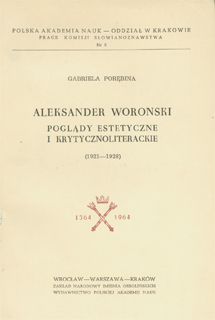
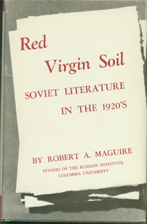
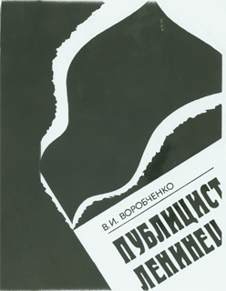
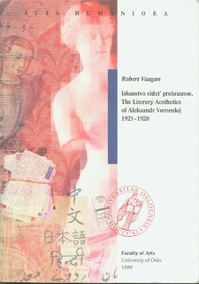

Books and Dissertations About Voronsky
Cover |
Description |
Contents |
|

|
Author: Gabriela Porębina.
Title: Aleksander Woroński. Poglady Estetyczne i Krytycznoliterackie (1921-1928). Where Published: Wrocław - Warszawa-Krakow, Zakład Narodowy im. Ossolińskich. Year: 1964. Pages: 147 |
Table of Contents: |
|

|
Author: Robert A. Maguire
Title: Red Virgin Soil: Soviet Literature in the 1920s. Where Published: Princeton University Press. Year: 1968. Pages: 482. |
|
 |
Author: П . В. Куприяновский [P. V. Kupriianovskii]
Title: А. К. Воронский в Иваново-Вознесенской печати (1918-1926). Библиографический указатель. [A. K. Voronskii in the Ivanovo-Voznesensk Press (1918-1926)] Publisher: Иваново: Ивановский Гос. Университет Year: 1979 Tirazh: 200 Pages: 24 |
|
|  | Author: В. И. Воробченко [V. I. Vorobchenko]
Title: Публицист-Ленинец. Революционно-публицистическая деятельность А. К. Воронского (1911-1918 гг.) [Publicist-Leninist. The Revolutionary-Publicistic Activity of A. K. Voronsky (1911-1918)] Publisher: Кишинев «Штиинца» Year: 1986 Tirazh: 1075 Pages: 159 |
|
 |
Author: Frederick S. Choate
Dissertation Title: Aleksandr Konstantinovich Voronskii's Literary Criticism. Where Published: Stanford University. Year: 1987. Pages: 362. |
|
 |
Author: И. И. Овсянников [Ivan I. Ovsiannikov]
Title: «Мы шли покорять мир...». Документальная повесть об Александре Воронском. ["We came to pacify the world..." A Documentary Novella About Alexander Voronsky] Publisher: Voronezh. Year: 1992 Tirazh: 5000 Pages: 215 |
|
|

|
Author: Robert Vaagan
Dissertation Title: Iskusstvo videt' prekrasnoe. The Literary Aesthetics of Aleksandr Voronskij 1921-1928 Where Published: University of Oslo. Year: 1999. Pages: 440. |
|
 |
Author: Claude Kastler
Title: Alexandre Voronski. 1884-1943. Un bolchevik fou de litterature. Publisher: Ellug, Universite Stendahl, Grenoble. Year: 2000. Pages: 183. |
|
 |
Author: Efim A. Dinershtein
Title: А. К. Воронский. В поисках живой воды. [A. K. Voronskii. In Search of Living Water] Publisher: Moscow: ROSSPEN. Year: 2001. Tirazh: 2000. Pages: 360. |
|